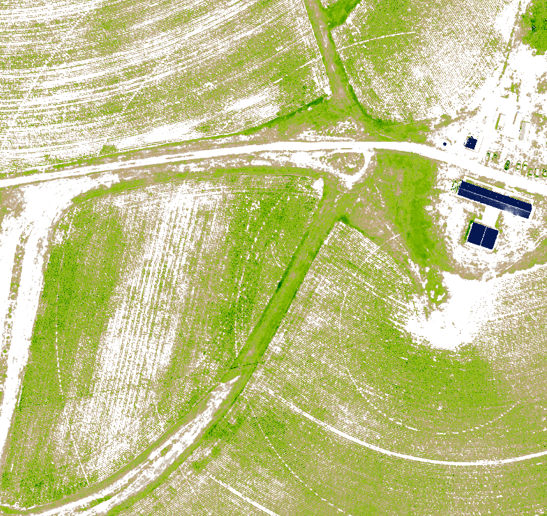
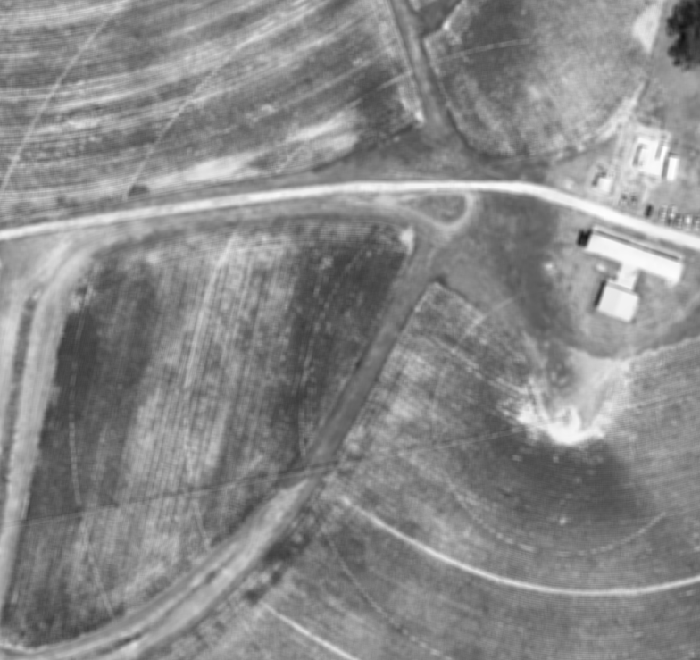
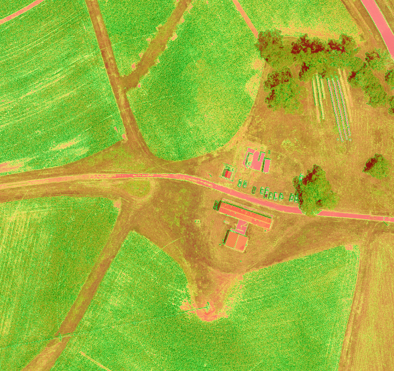
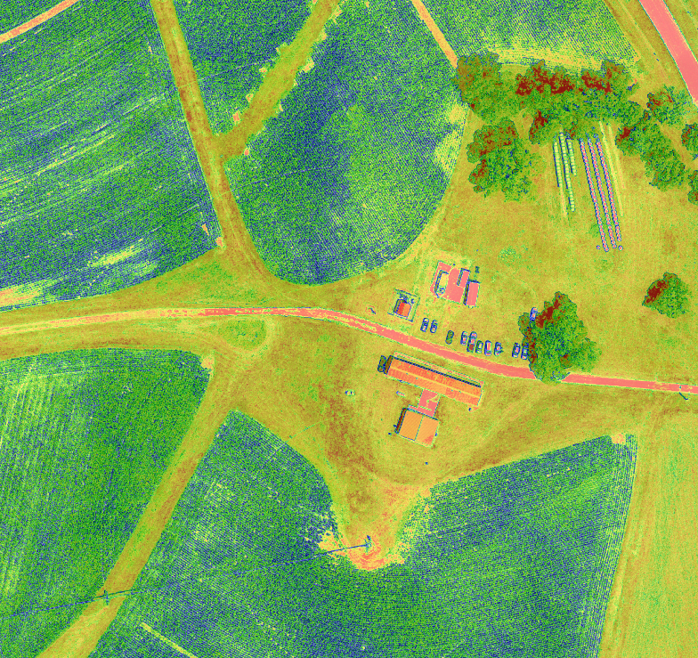
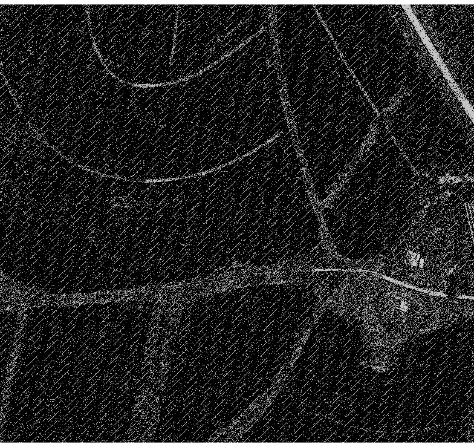
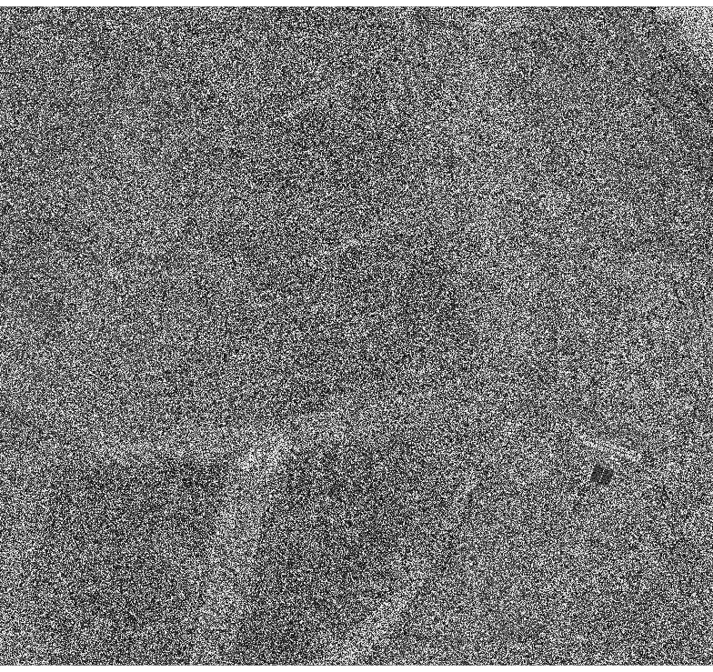
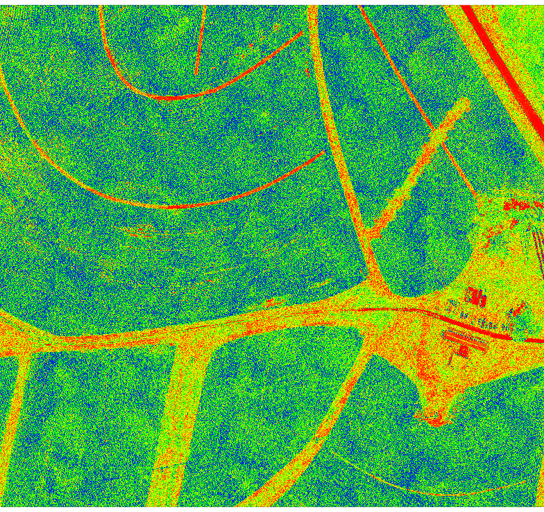
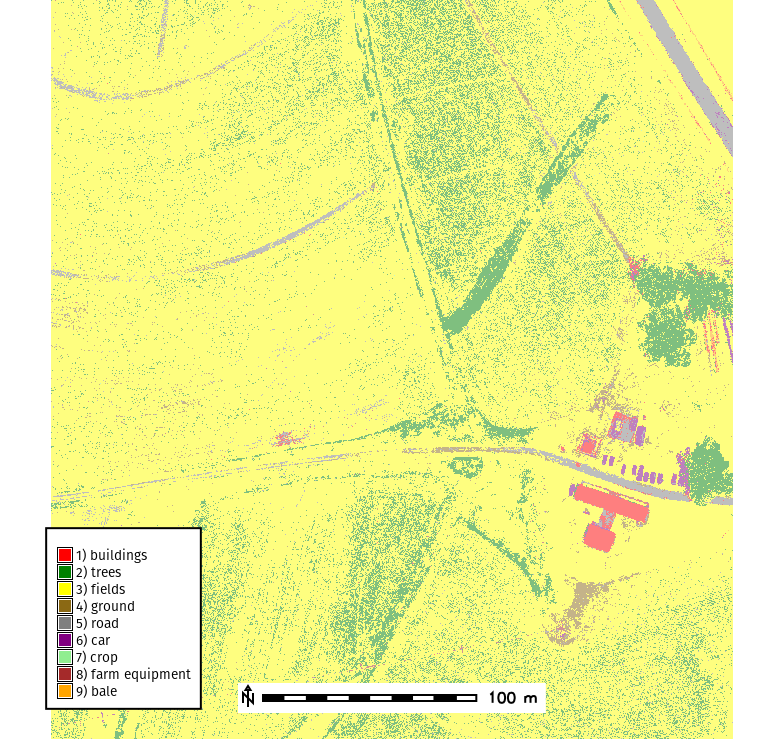

Assignment 6A
UAS Image Classification
Outline
- Feature Engineering
- Segmentation
- Image Classification
- Validation
Data
Download imagery data from March and June flights during 2017.
Workflow
Create a new mapset within your Lake_Wheeler_NCspm project and set your working directory.
Import the ortho imagery for the July 17, 2024 UAS flight. The orthophoto is save as a Cloud Optimized GeoTIFF (COG) which allows us to directory import the data using r.import with needing to download the data beforehand.
r.import input=https://storage.googleapis.com/gis-course-data/gis584/uas-flight-data/Lake%20Wheeler%20-%20NCSU/071724/odm_orthophoto.tif resample=nearest output=odm_071724_orthoLet’s set the compuational region to the ortho imagery.
g.region raster=odm_071724_ortho.1Task: What is the spatial resolution and how many pixels are include in the compuational region?
Image Classification
Let’s create an RGB color composite from our ortho bands.
r.composite -d red=odm_071724_ortho.1 green=odm_071724_ortho.2 blue=odm_071724_ortho.3 output=odm_071724_ortho.rgbLet’s create a raster mask for our analysis.
r.mapcalc expression="img_mask = if( odm_071724_ortho.rgb, 1, null())"
r.mask raster=img_maskSpectral Feature Extraction
Spectral Indices
Calculate VARI index
r.mapcalc expression="vari_2024 = (odm_071724_ortho.2 - odm_071724_ortho.1) / (odm_071724_ortho.2 + odm_071724_ortho.1 - odm_071724_ortho.3)"Let’s look at the univariate statistics of our vari_2024 raster.
r.univar vari_2024Task: What is the range from the vari_2024 univariate statistics?
Now let’s look at the metadata for each of our bands.
r.info odm_071724_ortho.1
r.info odm_071724_ortho.2
r.info odm_071724_ortho.3Our original ortho bands were unsigned 8bit integers (a CELL data type in GRASS) ranging from 0-255 in value. However, when we calulate VARI the data is expected to be scaled from 0-1. To do this we must rescale our band data and cast our output data to Float32.
r.mapcalc expression="odm_071724_ortho.red = if(isnull(odm_071724_ortho.1), null(), float(odm_071724_ortho.1) / 255.0)"
r.mapcalc expression="odm_071724_ortho.green = if(isnull(odm_071724_ortho.2), null(), float(odm_071724_ortho.2) / 255.0)"
r.mapcalc expression="odm_071724_ortho.blue = if(isnull(odm_071724_ortho.3), null(), float(odm_071724_ortho.3) / 255.0)"Now let’s compute VARI for our dataset.
\[ VARI = \frac{(Green - Red)}{(Green + Red - Blue)} \]
r.mapcalc expression="odm_071724_ortho.vari = (odm_071724_ortho.green - odm_071724_ortho.red) / (odm_071724_ortho.green + odm_071724_ortho.red - odm_071724_ortho.blue)"
# Use the same color palette as NDVI
r.colors map=odm_071724_ortho.vari color=ndvi
Low Pass Filters
We will now compute a smooth layer to remove noise from our data with the r.neighbors tool. To do this we will compute the mean value for each pixel using a 27x27 moving window.
r.neighbors input=odm_071724_ortho.red size=27 method=average output=odm_071724_ortho.red.27x27mean
High Pass Filters
We will now create a layer to define our edges using the zero-crossings edge detection method implemented as i.zc in GRASS GIS.
i.zc --overwrite input=odm_071724_ortho.green output=odm_071724_ortho.green.zc threshold=0.5r.neighbors -c input=odm_071724_ortho.green size=7 method=variance output=odm_071724_ortho.green.7x7variance 
Task: Find a nice color scheme to display odm_071724_ortho.green.7x7variance and describe what information can be derived from the map.
Texture Features
Now we will calcuate the texture features Angular Second Moment (asm), Correlation (corr), and Contrast (con) for our green band using r.texture which implements Haralick et al. (1973) Grey level co-occurrence matrix (GLCM).
r.texture odm_071724_ortho.green output=odm_071724_ortho.green_texture method="asm,contrast,corr" -s  
Topographic Features Extraction
Not all features need to come from spectal data! You can use data from the DSM to provide more data when training your classification model.
To start import the DSM data from the July, 2024 flight.
r.import resample=bilinear extent=region input=https://storage.googleapis.com/gis-course-data/gis584/uas-flight-data/Lake%20Wheeler%20-%20NCSU/071724/dsm.tif output=odm_071724_dsm
# (Optional) Set the color table and create a relief map for viusalization
r.colors map=odm_071724_dsm color=elevation
r.relief input=odm_071724_dsm output=dsm_reliefSlope and Aspect
Calculate slope and aspect using r.slope.aspect
r.slope.aspect elevation=odm_071724_dsm slope=odm_071724_slope aspect=odm_071724_aspect pcurvature=odm_071724_pcurv tcurvature=odm_071724_tcurvTerrain Forms
Now derive terrain forms form the the DSM using r.geomorphon.
r.geomorphon elevation=odm_071724_dsm forms=geomorphon search=3 skip=0 flat=1 dist=0Create Imagery Group
GRASS GIS uses imagery groups (i.group) to manage imagery data.
Let’s start by creating a new imagery group called rgb_group with the subgroup rgb_group and add the red, green, and blue bands to the group/subgroup.
i.group group=rgb_group subgroup=rgb_group input=odm_071724_ortho.red,odm_071724_ortho.green,odm_071724_ortho.blueYou can now check that it worked by viewing which rasters are in the group (rgb_group) and subgroup (rgb_group).
i.group -l group=rgb_group subgroup=rgb_groupLet’s now add some of our other derived features to the group (analysis_bands) in a new subgroup called analysis_bands.
i.group group=analysis_bands subgroup=analysis_bands input=odm_071724_ortho.vari,odm_071724_ortho.blue,odm_071724_ortho.red.27x27mean,odm_071724_dsm,odm_071724_slope,odm_071724_aspect,geomorphon,odm_071724_ortho.green.7x7varianceImage Segmentation
Install i.superpixels.slic GRASS Addon using the g.extension command.
g.extension i.superpixels.slicLet’s see if we can segment the fields.
i.superpixels.slic input=rgb_group output=superpixels num_pixels=10000
r.to.vect input=superpixels output=superpixels type=areaWe can now evaluate our segments statistics.
For example we can calculate the mean VARI value for each vector segment.
If you run this command as givin it will take a long time to run. Try to reduce the number of segments to speed things up.
v.rast.stats map=superpixels_analy raster=odm_071724_ortho.vari column_prefix=vari method=averageLet’s see if we can improve our segmentation to capture individual crops in the field.
i.superpixels.slic input=analysis_bands output=superpixels_analysis step=7 compactness=0.8 minsize=15 memory=2000For our object based classification we will use i.segment.stats to generate multiple statistics about our segments at once.
To do this we must first install i.segment.stats.
g.extension i.segment.statsCompute the mean, standard deviation, and sum for each feature per segment. We also compute details about the geomertry of each segment such as the area, perimeter, and compactness.
If you run this command as givin it will take a long time to run. Try to reduce the number of segments to speed things up.
i.segment.stats map=superpixels rasters=odm_071724_ortho.red,odm_071724_ortho.green,odm_071724_ortho.blue raster_statistics="mean,stddev,sum" vectormap=segment_stats processes=3Classification
For classification we are going to use a decision tree based model called a RandomForest. To do this we need to install the GRASS GIS addon r.learn.ml which gives us access to models from the scikit learn python library.
g.extension r.learn.mlSampling
One benifit of using the RandomForest classification model is that it utilizes a sampling strategy know as bootstraping. It does this by using out-of-bag samples (OOB) for each decision tree in the model. The OOB samples are used to calculate error, which works as a cross-validation mechanism and helps maintain diversity between decision trees.
However, many models require you to sample your data independently. To do this you can perform and random sample using r.random or a stratified random sample using r.sample.category.
Let’s import NLCD 2019 land cover data to perform the sampling.
When importing COGs make sure to set the extent=region to make sure you are only downloading the data you need.
r.import input=https://storage.googleapis.com/stac-data/Spatial_Data/LandUse/NLCD_Land_Cover_L48/nlcd_2019_cog/nlcd_2019_cog.tif output=nlcd_2019 extent=region resolution=region resample=nearestStart by sampling 1000 points from nlcd_2019.
r.random -s input=nlcd_2019 npoints=1000 raster=nlcd_2019_random_pixels vector=nlcd_2019_random_pixels
# Display the sample data
d.vect nlcd_2019_random_pixelsNow do a stratified random sample using r.sample.category.
First download the addon
g.extension r.sample.categoryNow run the command to take 1000 samples from each land cover class.
r.sample.category input=nlcd_2019 output=nlcd_2019_strat_samples npoints=1000
# Display the sample data
d.vect nlcd_2019_strat_samplesTrain Model
To train the model you will use r.learn.train. The random forest model requires us to provide a training_map and our imagery group. To save time use our rgb_group, but in practice you should using the analysis_bands group that contains the additional features you created.
Training data can be downloaded here: Download Training Data or you can create your own using the g.gui.iclass tool found at Imagery -> Classify image -> Interactive input for supervised classification.
Model training can take a long time to run. If you are having issues running on your local machine try resampling the data to 1m resolution.
r.learn.train group=rgb_group training_map=training_rf model_name=RandomForestClassifier n_estimators=500 save_model=rf_model.gz max_features=3 fimp_file=feature_importance.csv -fThe trained model will be save as rf_model.gz.
Feature Importance
You can calculate the feature importance by using the -f flag and saving the results to a csv file using the parameter fimp_file. Our feature importance is saved to feature_importance.csv.
The features with higher the importance scores indicate they are more influential in making predictions. While features with low importance, could potentially be removed to simplify the model.
Run Model
To use the model run r.learn.predict by loading the model (rf_model.gz) you create during training.
r.learn.predict group=rgb_group load_model=rf_model.gz output=rf_basic_classificationNow we can check the categories and set the colors.
You can download the color table here category_colors.txt or copy the rules here
1 255:0:0
2 0:128:0
3 255:255:0
4 139:105:20
5 127:127:127
6 128:0:128
7 144:238:144
8 165:42:42
9 255:165:0
nv white# check raster categories - they are automatically applied to the classification output
r.category rf_classification
r.colors map=rf_basic_classification rules=category_colors.txt
Model Validation
We will now evaluate our model by looking at the models confussion matrix, overvall accuracy, and kappa coefficient using the GRASS addon r.confusionmatrix.
To begin we first need to install the addon.
g.extension r.confusionmatrixNow run r.confusionmatrix
r.confusionmatrix classification=rf_basic_classification raster_reference=training_rf -m -dThe output for our classified model will look similar to below
Overall accuracy
Number of correct pixels / total number of pixels
Overall Accuracy, 97.07
User Accuracy
- From the perspective of the user of the classified map, how accurate is the map?
- For a given class, how many of the pixels on the map are actually what they say they are?
- Calculated as: Number correctly identified in a given map class / Number claimed to be in that map class
Producer Accuracy
- From the perspective of the maker of the classified map, how accurate is the map?
- For a given class in reference plots, how many of the pixels on the map are labeled correctly?
- Calculated as: Number correctly identified in ref. plots of a given class / Number actually in that reference class
Commission Error
Commission error refers to sites that are classified as to reference sites that were left out (or omitted) from the correct class in the classified map. Commission errors are calculated by reviewing the classified sites for incorrect classifications.
Commission Error = 100 % - User Accuracy
Omission Error
Omission error refers to reference sites that were left out (or omitted) from the correct class in the classified map. The real land cover type was left out or omitted from the classified map.
Omission Error = 100 % - Producer Accuracy
Kappa coefficient
It characterizes the degree of matching between reference data set and classification.
- Kappa = 0: indicates that obtained agreement equals chance agreement.
- Kappa > 0: indicates that obtained agreement is greater than chance agreement.
- Kappa < 0: indicates that obtained agreement is smaller than chance agreement.
- Kappa = 1: is perfect agreement.
Kappa coefficient, 0.85
Task: Interpret how well the model is performing. Which classes are performing well? Which need to be improved?
| Category | buildings | trees | fields | ground | road | car | crop | farm equipment | bale | User Accuracy |
|---|---|---|---|---|---|---|---|---|---|---|
| buildings | 80379 | 63 | 22 | 6 | 70 | 27 | 1 | 34 | 24 | 99.69 |
| trees | 118 | 264667 | 25671 | 0 | 237 | 2 | 105 | 44 | 0 | 91.0 |
| fields | 610 | 77160 | 6187667 | 16564 | 53766 | 268 | 762 | 2636 | 133 | 97.6 |
| ground | 57 | 1 | 8871 | 45799 | 3132 | 1 | 2 | 151 | 0 | 78.94 |
| road | 409 | 58 | 7070 | 1559 | 221794 | 1709 | 1 | 395 | 77 | 95.16 |
| car | 75 | 2 | 38 | 0 | 2694 | 19216 | 0 | 18 | 1095 | 83.05 |
| crop | 0 | 1 | 2 | 0 | 2 | 0 | 36 | 0 | 0 | 87.8 |
| farm equipment | 32 | 9 | 88 | 5 | 46 | 19 | 0 | 4311 | 1 | 95.57 |
| bale | 20 | 0 | 2 | 0 | 5 | 2 | 0 | 1 | 719 | 95.99 |
| Producer Accuracy | 98.38 | 77.4 | 99.33 | 71.64 | 78.72 | 90.45 | 3.97 | 56.8 | 35.09 |